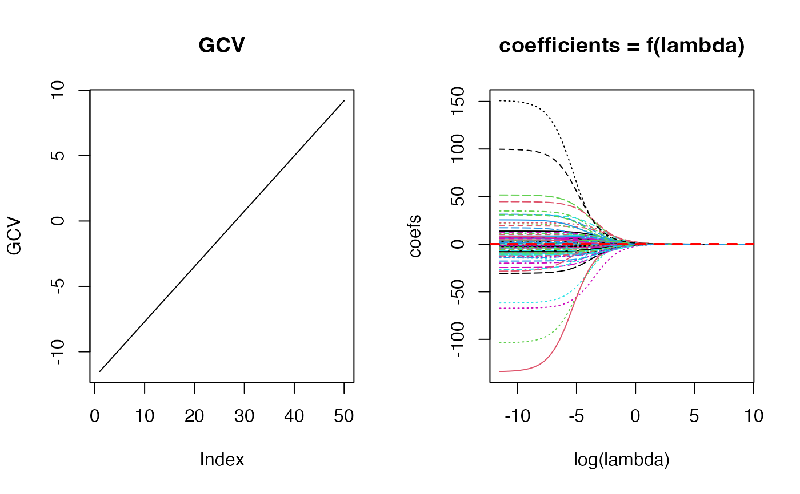
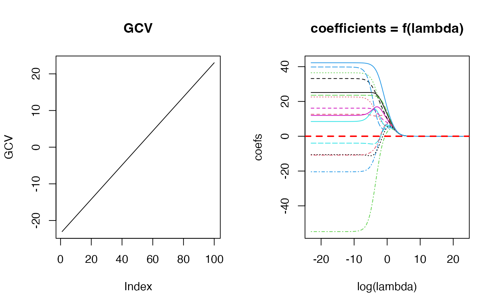

Fit Matern 3/2 model
fit_matern32.RdFit Matern 3/2 model
Examples
n <- 100; p <- 4
set.seed(456)
X <- matrix(rnorm(n * p), n, p) # no intercept!
y <- rnorm(n)
lams <- 10^seq(-5, 4, length.out = 50)
fit_obj <- matern32::fit_matern32(x = X, y = y, lambda = lams)
par(mfrow=c(1, 2))
plot(log(lams), fit_obj$GCV, type = 'l', main = "GCV",
ylab = "GCV")
matplot(log(lams), t(fit_obj$coef), type = 'l',
main = "coefficients = f(lambda)", xlab = "log(lambda)",
ylab = "coefs")
abline(h = 0, lty = 2, lwd = 2, col = "red")

matern32::summary.matern32(fit_obj)
#> Response:
#> Min. 1st Qu. Median 3rd Qu. Max.
#> -2.3806348 -0.4176797 0.1388008 0.8793842 3.0094024
#>
#> Residuals:
#> Min. 1st Qu. Median 3rd Qu. Max.
#> -2.41511940 -0.53537057 -0.02020591 0.73921164 2.80314068
#>
#> 1st order effects:
#> Est Std. Error t value Pr(>|t|)
#> 1 -9.311574e-06 3.887027e-05 -0.2395551 0.811185872
#> 2 1.236463e-04 3.949938e-05 3.1303344 0.002313617 **
#> 3 1.131513e-05 3.894181e-05 0.2905651 0.772010746
#> 4 -1.328007e-05 3.787813e-05 -0.3505999 0.726656705
#> ---
#> Signif. codes: 0 '***' 0.001 '**' 0.01 '*' 0.05 '.' 0.1 ' ' 1
#>
#> Distribution of marginal effects:
#> V1 V2 V3
#> Min. :-2.508e-02 Min. :-2.497e-02 Min. :-2.480e-02
#> 1st Qu.:-1.447e-03 1st Qu.:-1.297e-03 1st Qu.:-1.364e-03
#> Median :-4.404e-05 Median :-4.456e-06 Median : 0.000e+00
#> Mean :-9.312e-06 Mean : 1.236e-04 Mean : 1.131e-05
#> 3rd Qu.: 1.324e-03 3rd Qu.: 1.415e-03 3rd Qu.: 1.325e-03
#> Max. : 2.954e-02 Max. : 2.381e-02 Max. : 2.541e-02
#> V4
#> Min. :-2.890e-02
#> 1st Qu.:-1.194e-03
#> Median : 6.068e-05
#> Mean :-1.328e-05
#> 3rd Qu.: 1.592e-03
#> Max. : 2.185e-02
#>
#> Multiple R-squared: 0.03498975 Adjusted R-squared: -0.005642265
#>
#> Residuals Box test: 0.05531429 Residuals Shapiro test: 0.6357804
#>
#> LOOCV error: 101.7567 lambda: 26.82696
library(MASS)
X <- longley[,-7]
y <- longley[, 7]
fit_obj <- matern32::fit_matern32(x = X, y = y)
par(mfrow=c(1, 2))
plot(log(fit_obj$lambda), fit_obj$GCV, type = 'l', main = "GCV",
ylab = "GCV")
matplot(log(fit_obj$lambda), t(fit_obj$coef), type = 'l',
main = "coefficients = f(lambda)", xlab = "log(lambda)",
ylab = "coefs")
abline(h = 0, lty = 2, lwd = 2, col = "red")

matern32::summary.matern32(fit_obj)
#> Response:
#> Min. 1st Qu. Median 3rd Qu. Max.
#> 60.1710 62.7125 65.5040 68.2905 70.5510
#>
#> Residuals:
#> Min. 1st Qu. Median 3rd Qu. Max.
#> -5.479492e-09 -5.612915e-10 1.438529e-09 2.714826e-09 4.223992e-09
#>
#> 1st order effects:
#> Est Std. Error t value Pr(>|t|)
#> GNP.deflator 0.38804069 0.11231518 3.4549265 0.0061750027 **
#> GNP 0.46864334 0.09713599 4.8246105 0.0006973893 ***
#> Unemployed 0.29877987 0.15096718 1.9791049 0.0759856842 .
#> Armed.Forces 0.01963802 0.10906456 0.1800586 0.8607029882
#> Population 0.41293025 0.09770680 4.2262181 0.0017542634 **
#> Year 0.45740785 0.09333162 4.9008883 0.0006222926 ***
#> ---
#> Signif. codes: 0 '***' 0.001 '**' 0.01 '*' 0.05 '.' 0.1 ' ' 1
#>
#> Distribution of marginal effects:
#> GNP.deflator GNP Unemployed Armed.Forces
#> Min. :-8.6203 Min. :-5.8885 Min. :-9.2591 Min. :-4.54804
#> 1st Qu.:-0.1580 1st Qu.:-0.1433 1st Qu.:-0.3304 1st Qu.:-0.80442
#> Median : 0.4848 Median : 0.5345 Median : 0.2018 Median : 0.00000
#> Mean : 0.3880 Mean : 0.4686 Mean : 0.2988 Mean : 0.01964
#> 3rd Qu.: 1.2454 3rd Qu.: 1.3997 3rd Qu.: 1.0672 3rd Qu.: 0.63753
#> Max. : 4.8282 Max. : 3.6191 Max. : 8.1953 Max. : 5.16689
#> Population Year
#> Min. :-5.6781 Min. :-5.4276
#> 1st Qu.:-0.1696 1st Qu.:-0.1735
#> Median : 0.5619 Median : 0.5834
#> Mean : 0.4129 Mean : 0.4574
#> 3rd Qu.: 1.2177 3rd Qu.: 1.2846
#> Max. : 3.9818 Max. : 3.5683
#>
#> Multiple R-squared: 1 Adjusted R-squared: 1
#>
#> Residuals Box test: 0.3597019 Residuals Shapiro test: 0.1698543
#>
#> LOOCV error: 191.2803 lambda: 1e-10
library(MASS)
X <- as.matrix(Boston[,-14])
y <- Boston[,14]
fit_obj <- matern32::fit_matern32(x = X, y = y, lambda = lams)
#> Processing... (try using option 'with_kmeans' for faster results when nrow(x) > 500)
matern32::summary.matern32(fit_obj)
#> Processing...
#> Response:
#> Min. 1st Qu. Median 3rd Qu. Max.
#> 5.000 17.025 21.200 25.000 50.000
#>
#> Residuals:
#> Min. 1st Qu. Median 3rd Qu. Max.
#> -3.73949605 -0.44966838 -0.01234082 0.42621680 6.55736835
#>
#> 1st order effects:
#> Est Std. Error t value Pr(>|t|)
#> crim 0.0078617019 0.002096392 3.75011045 1.977383e-04 ***
#> zn -0.0010578109 0.002864409 -0.36929458 7.120667e-01
#> indus -0.0012651919 0.002907295 -0.43517841 6.636234e-01
#> chas 0.0037947566 0.001847506 2.05398861 4.050357e-02 *
#> nox 0.0000358718 0.002886408 0.01242784 9.900893e-01
#> rm 0.0031964506 0.003772837 0.84722739 3.972795e-01
#> age 0.0042306242 0.003890811 1.08733741 2.774190e-01
#> dis -0.0013129451 0.003490792 -0.37611669 7.069919e-01
#> rad 0.0073668764 0.002561466 2.87603918 4.201356e-03 **
#> tax 0.0083842042 0.002605052 3.21844025 1.373780e-03 **
#> ptratio -0.0200910395 0.003961714 -5.07130027 5.602456e-07 ***
#> black -0.0019127944 0.002912144 -0.65683366 5.115944e-01
#> lstat 0.0336735921 0.003927714 8.57333164 1.305134e-16 ***
#> ---
#> Signif. codes: 0 '***' 0.001 '**' 0.01 '*' 0.05 '.' 0.1 ' ' 1
#>
#> Distribution of marginal effects:
#> crim zn indus
#> Min. :-27.85943 Min. :-18.103737 Min. :-18.014754
#> 1st Qu.: -0.06564 1st Qu.: 0.000000 1st Qu.: -0.340440
#> Median : -0.00018 Median : 0.000000 Median : 0.000000
#> Mean : 0.00786 Mean : -0.001058 Mean : -0.001265
#> 3rd Qu.: 0.05110 3rd Qu.: 0.000000 3rd Qu.: 0.275649
#> Max. : 36.82551 Max. : 25.525803 Max. : 25.465363
#> chas nox rm
#> Min. :-18.26534 Min. :-30.52666 Min. :-38.40300
#> 1st Qu.: 0.00000 1st Qu.: -0.37433 1st Qu.: -0.29459
#> Median : 0.00000 Median : 0.00000 Median : 0.00214
#> Mean : 0.00379 Mean : 0.00004 Mean : 0.00320
#> 3rd Qu.: 0.00000 3rd Qu.: 0.30924 3rd Qu.: 0.35506
#> Max. : 42.96471 Max. : 34.82514 Max. : 44.09853
#> age dis rad
#> Min. :-45.33254 Min. :-33.07670 Min. :-38.94354
#> 1st Qu.: -0.34168 1st Qu.: -0.32288 1st Qu.: -0.17377
#> Median : -0.00033 Median : 0.00215 Median : 0.00000
#> Mean : 0.00423 Mean : -0.00131 Mean : 0.00737
#> 3rd Qu.: 0.34173 3rd Qu.: 0.33529 3rd Qu.: 0.15760
#> Max. : 26.23979 Max. : 37.69106 Max. : 20.89031
#> tax ptratio black
#> Min. :-25.725841 Min. :-24.77382 Min. :-47.51445
#> 1st Qu.: -0.288232 1st Qu.: -0.31924 1st Qu.: -0.06759
#> Median : 0.000000 Median : 0.00000 Median : 0.00000
#> Mean : 0.008384 Mean : -0.02009 Mean : -0.00191
#> 3rd Qu.: 0.244914 3rd Qu.: 0.27019 3rd Qu.: 0.06674
#> Max. : 18.511776 Max. : 39.67301 Max. : 25.28238
#> lstat
#> Min. :-31.25058
#> 1st Qu.: -0.35125
#> Median : 0.00004
#> Mean : 0.03367
#> 3rd Qu.: 0.33148
#> Max. : 51.27531
#>
#> Multiple R-squared: 0.9889715 Adjusted R-squared: 0.9886801
#>
#> Residuals Box test: 0.0001952609 Residuals Shapiro test: 6.0648e-17
#>
#> LOOCV error: 4461.303 lambda: 0.0202359